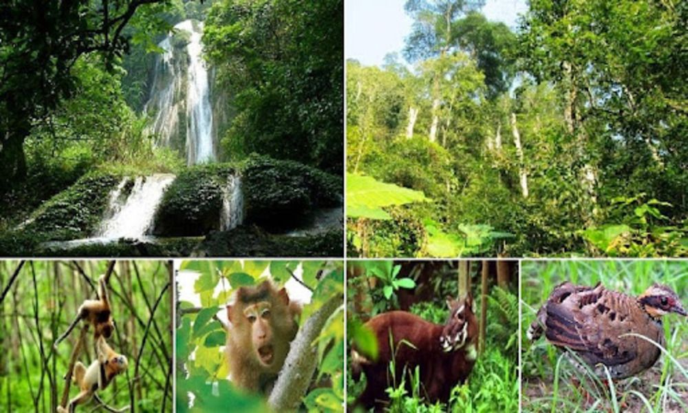
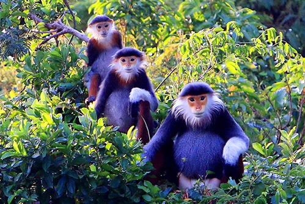
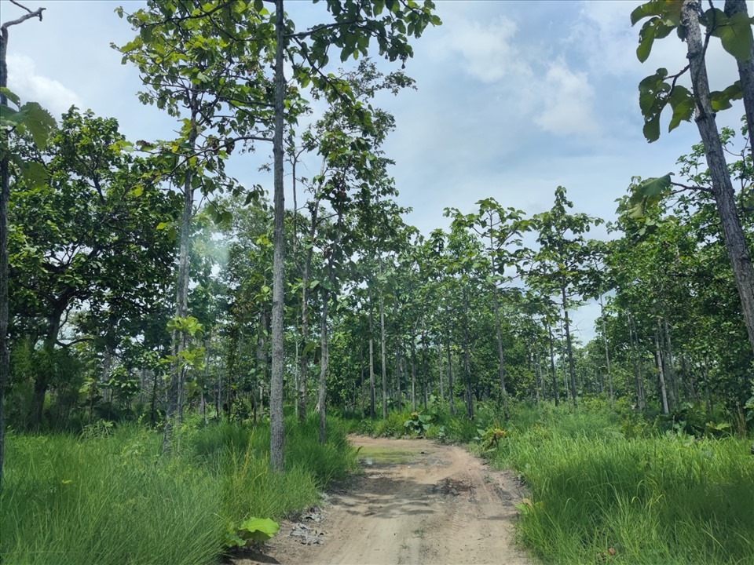
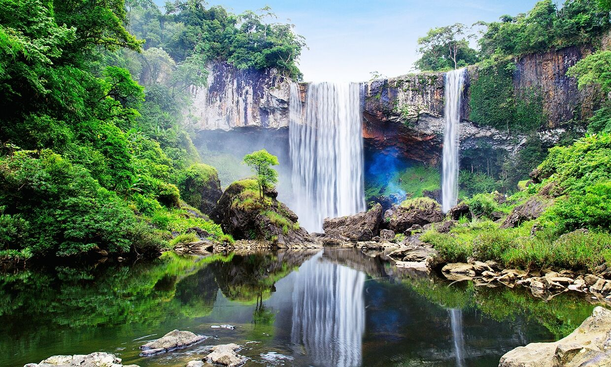

Vùng đất thiên nhiên phong phú của Tây Nguyên
Là khu bảo tồn thiên nhiên quan trọng của Gia Lai, nơi có hệ sinh thái rừng nguyên sinh và nhiều loài quý hiếm.

Gia Lai là nơi sinh sống của chà vá chân xám, vượn má vàng và nhiều loài chim đặc hữu Tây Nguyên.

Hệ thực vật đa dạng với nhiều cây gỗ lớn, cây dược liệu và sinh cảnh tự nhiên phong phú.

Được UNESCO công nhận, góp phần bảo tồn đa dạng sinh học và phát triển bền vững.
